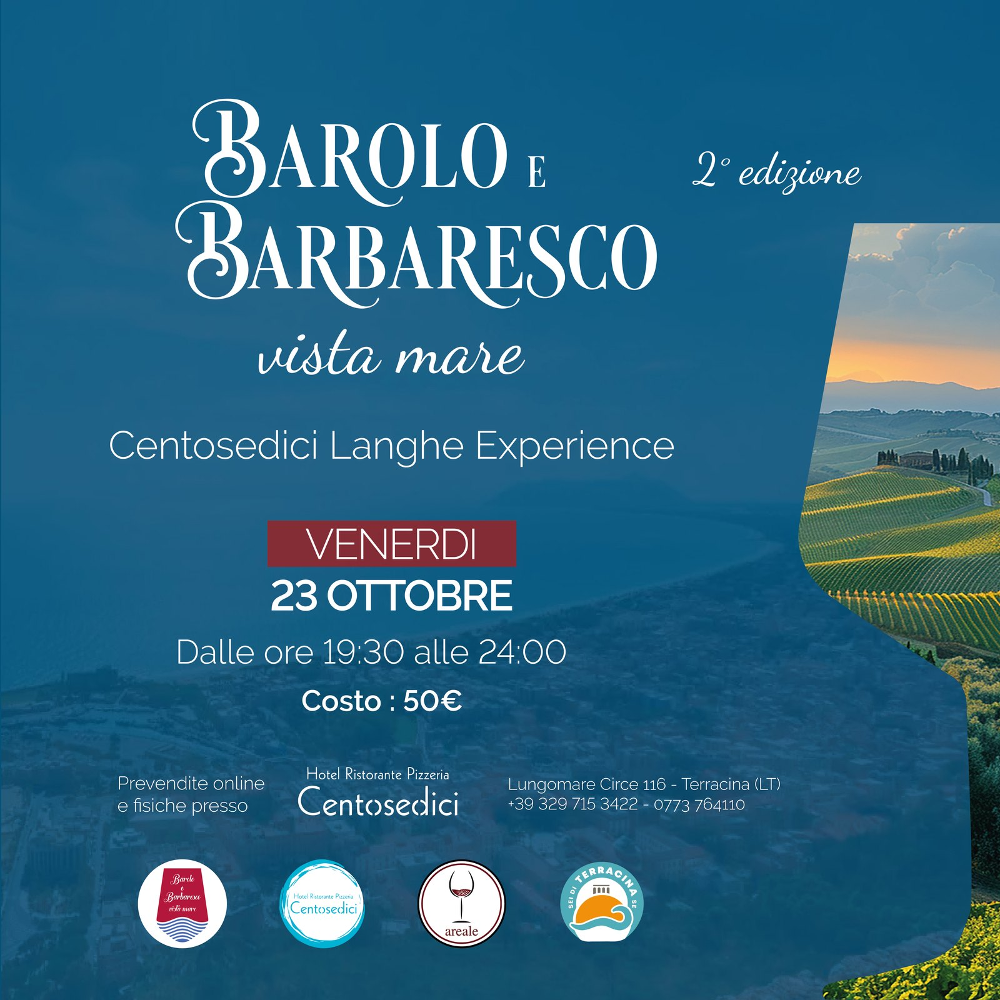

Evento speciale
Barolo e Barbaresco vista mare
23 ottobre, ore 19:30 — Ristorante 116, Terracina
23 ottobre, ore 19:30 — Ristorante 116, Terracina
Barolo e Barbaresco nascono a pochi chilometri di distanza, nelle Langhe, dallo stesso vitigno — il Nebbiolo — eppure raccontano due storie diverse: due areali, due stili, due modi di interpretare la stessa uva.
Per una sera portiamo questo confronto a Terracina, sulla terrazza vista mare del Ristorante 116: un percorso guidato tra etichette, produttori e un menù pensato per accompagnare ogni calice.



Foto della prima edizione e delle Langhe — verranno sostituite con gli scatti di questa serata. Clicca su una foto per vederla più grande.